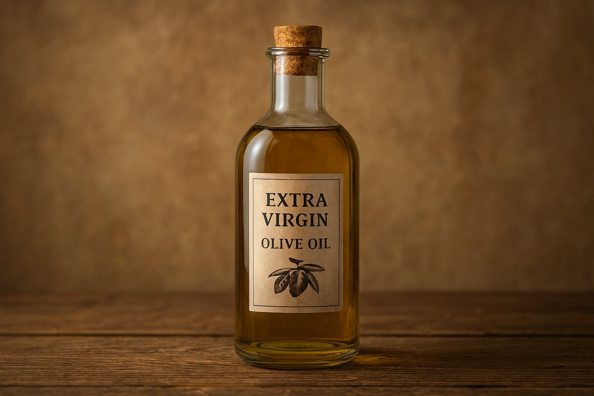
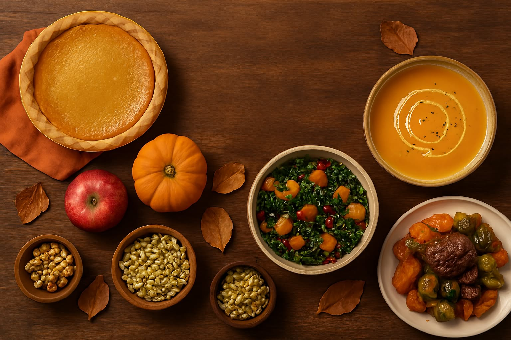

Nuevo aceite de oliva premiado
Descubre el sabor único del aceite virgen extra galardonado por su calidad y aroma excepcionales. Extraído en frío y elaborado con aceitunas de cultivo ecológico, este producto representa la excelencia de la tradición mediterránea.
Seguir leyendo

Recetas de otoño para sorprender
Inspírate con platos de temporada como cremas de calabaza, setas salteadas y carnes con frutos rojos. Nuestra selección de recetas gourmet te ayudará a crear menús cálidos y sofisticados para disfrutar en buena compañía.
Seguir leyendo